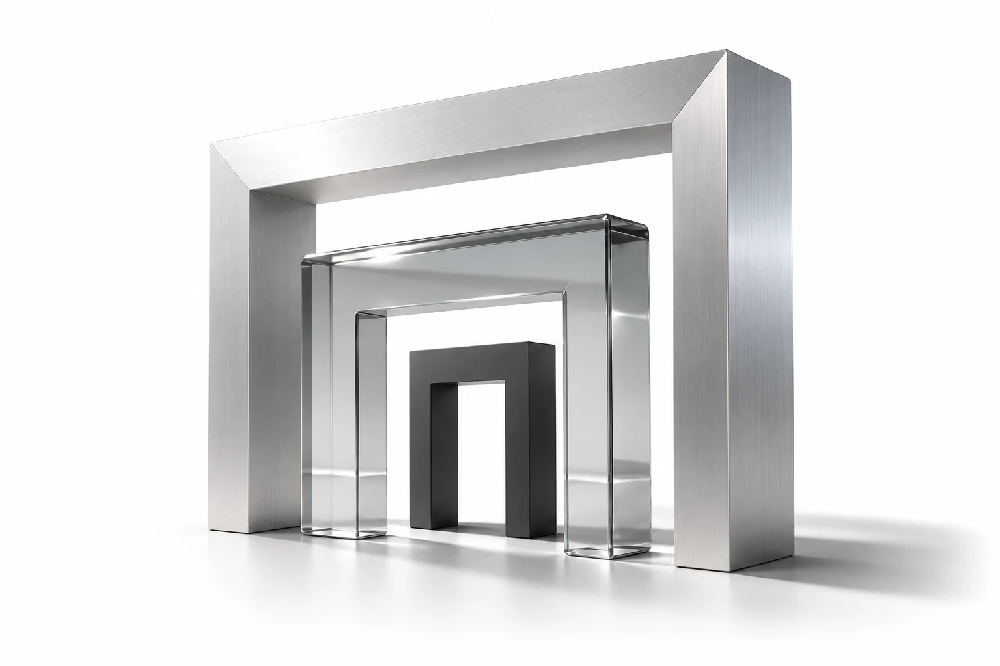

UI Kit
清楚的层级，可信的触感。
基础、组件、状态与组合。所有控件均可操作。基础标尺
共享字体、灰阶、间距与曲线。
bg-100
bg-200
gray-100
gray-300
gray-500
gray-700
gray-900
gray-1000
Aa 永
Geist Sans · 中文系统字体
0123456789 / Geist Mono40 / 48
页面标题
24 / 32
章节标题
16 / 24 正文
14 / 20 控件4
8
12
16
24
32
48
材质与光
同一光源下，观察厚度、反射与投影。

光学样本
按需加载 Three.js；静态图始终可用。
实时 PBR 近似。阴影方向随主光变化；不模拟全局焦散。示意不代表应用功能。
接触 · 1
按钮、控件
抬升 · 2
菜单、提示
浮起 · 3
对话框、独立面板
查看代码
.cb-panel { background: var(--cb-surface); box-shadow: var(--cb-raised); }按钮
尺寸、优先级与完整交互状态。
优先级
尺寸
默认
悬停
按下
聚焦
禁用
加载
查看代码
<a class="cb-button primary" href="access.html" >开始使用</a>输入与验证
标签、帮助、错误各有职责。
只读字段仍可选择和复制。
请输入会话名称。
请补充必要说明。
查看代码
<div class="cb-field"><label for="profile-name">档案名称</label><input class="cb-input" id="profile-name" placeholder="输入档案名称"/></div>选择与切换
使用原生表单语义，保留键盘行为。
Checkbox
Radio
Switch
查看代码
<label class="cb-choice"><input class="cb-switch" role="switch" type="checkbox"/>启用通知</label>状态与反馈
颜色与文字共同表达状态；所有示例不接真实网络。
已核验等待已隔离未连接
ⓘ 此处是组件演示，不会改变本机网络。
! 检测到出口变化，请查看诊断结果。
! 连接已隔离，需要重新核验。
还没有会话
创建一个示例，查看空态怎样结束。
查看代码
<span class="cb-badge success">已核验</span>浮层与焦点
浮层的高度决定投影；打开与关闭都有明确的焦点归属。
移除示例会话？
此处展示对话框样式，点击左侧按钮可检查焦点与 Escape。
查看代码
<dialog class="cb-dialog"><h3>确认操作</h3><p>操作影响说明。</p></dialog>数据与动作
紧凑的行间距、对齐的列、按需出现的行操作。
| 会话 | 模式 | 状态 | 操作 |
|---|---|---|---|
| 工作会话 | 单独打开 | 已核验 | |
| 个人会话 | 现有登录 | 未连接 |
把组件放回任务里
一份表单，验证输入、切换、提交与反馈能否共同工作。